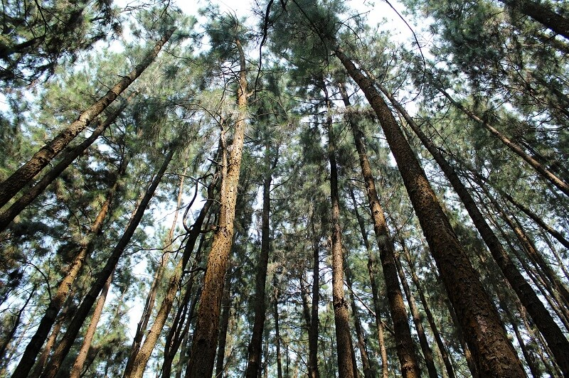
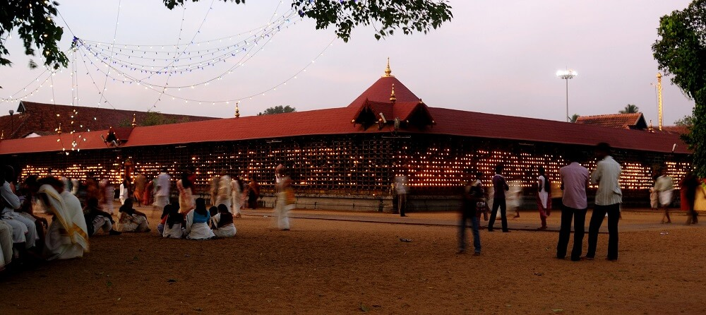

Vagamon Hillstation
Some representative placeholder content for the first slide.

Island of Pathiramanal
Some representative placeholder content for the second slide.

Vaikom - A pilgrimage Venue in kottayam
Some representative placeholder content for the third slide.